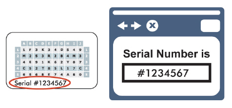
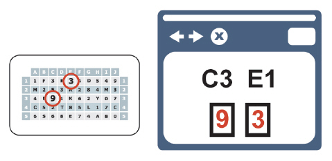

|
IdentityGuard Server 13.0 Administration Guide |
|
IdentityGuard Server 13.0 Administration Guide |
Grid authentication not only provides a secure, low cost and easy way to authenticate users, it also includes built-in mechanisms for mutual authentication.
● One mutual authentication mechanism is based on the serial number of the grid itself. Each grid card or passcode list has a unique serial number that is known only to the user and the organization that issued it. During login, you can display this number to the user when prompting for user authentication, as shown in the following figure.

Before entering a password or grid challenge response, users confirm that the serial number displayed on the screen matches the one on their card or list. If it does, users can be confident they are accessing the legitimate site.
● Another mechanism available with the card is to display specific grid coordinates. That is, you tell users what values are in specific cells on their cards, as shown in the following figure. This confirms that you have specific knowledge of the contents of the grid and, therefore, must be legitimate.

Complete the following steps to enable serial number display authentication:
● Enable grid authentication. (See Grid authentication overview.)
● For serial number display authentication, configure your application to get the card serial number and display it to the user during authentication.
● For grid location display authentication, configure your application to use grid authentication.
For more information, see the Entrust IdentityGuard Programming Guide.
Tokens also include serial numbers. Any display method described above for grids also works for tokens.